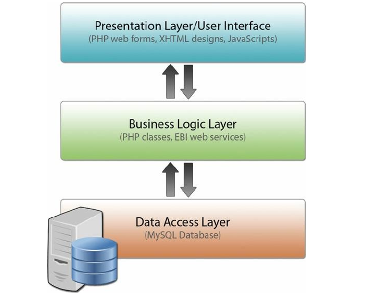

Introduction
Web applications use different structures to work efficiently and meet various needs. These structures, or architectures, help decide how the application is built, how it performs, and how well it can grow or handle complex tasks.
Importance of Understanding Different Categories and Architectural Patterns
Understanding different categories and architectural patterns is crucial for designing effective, scalable, and user-friendly web applications tailored to specific needs and constraints.
Layered Architecture
Layered architecture is a common pattern in web applications where the system is divided into layers, each handling a specific responsibility.
Structure:
- Presentation Layer: Responsible for user interface and user interactions.
- Business Logic Layer: Handles the core functionality, processing the user requests.
- Data Layer: Manages the storage and retrieval of data.
Benefits:
- Separation of Concerns: Divides the system into distinct sections, each handling a specific aspect of functionality.
- Modularity: Allows for independent development and maintenance of each layer.
- Scalability: Ensures that the system can handle increased loads or complexity effectively.
Diagram of Layered Architecture

Features of Document-Centric Apps
Real-time collaboration
Version control
Editing tools